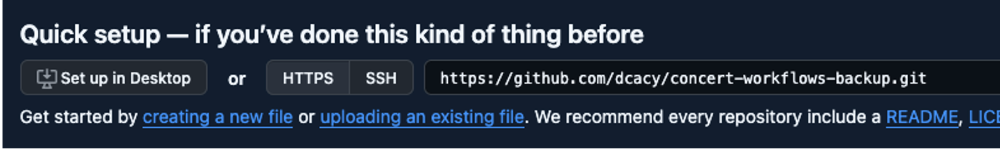
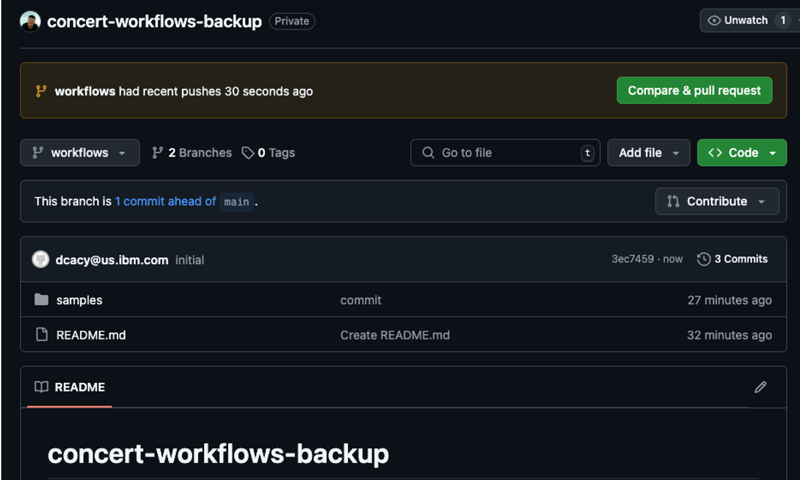

HOWTO Back Up Concert Workflows to Git
- Create a classic developer token in https://github.com/settings/tokens. Give it full control of private repositories.
-
Create a repo in GitHub. Make sure to create the main branch (ex. by creating a README), and create other branches if you prefer. Copy the URL for the HTTPS clone option, ex.
https://github.com/dcacy/concert-workflows-backup.git.
- Go to the Concert Workflows Authentications page and click Create Authentication. Give it a name (ex. concert-for-workflows). For the service, choose Git (not Github). Set these four properties to be overwritable, provide the following values, and click Create:
- URL - use the HTTPS clone URL from the previous step
- Branch - leave blank
- Username - your email address for logging in to GitHub
- Password - the token you created above
- Go to the Workflows page in Concert Workflows. Click the three dots to the right of the Create Workflow button and choose the Git config option. For the Auth Key, click on the dropdown (not the plus) and choose the authentication you created above. If you created the authentication correctly, you’ll see “Fetching Branches” under the Branches dropdown for a few seconds; then you should be able to click the dropdown and see the branches you created. Select one and click Create. You should see a success message.
- When you want to commit changes, navigate to the directory you want to commit. Click the three dots to the right of Create Workflow and choose Git Push. Provide a comment and click Push. NOTE: This will overwrite the repo directory with whatever is in your current workflow directory. For example, if you have created a “samples” directory in Workflows and choose Git Push, all the workflows in that samples directory (and its children) will be pushed, but no workflows in other directories. If you are in the root, all workflows will be copied to the repo except whatever is in Shared.
-
It takes a while to complete the push. Go to your repo and refresh it to see the yaml files of the workflows.

- Done.
A few items to note:
- You can also pull content from a Git repo; be aware that it will delete all existing workflows in Concert and replace them with whatever is in the repo.
- You can navigate to a particular directory in Workflows and initiate the push from there; it will push every workflow in that directory and all child directories.